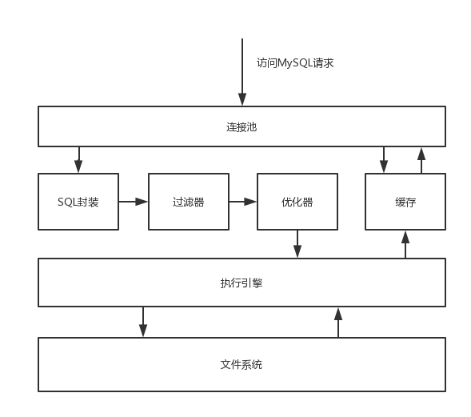

如何优雅的使用MySQL索引
MySQL最常用的引擎是MyISAM和innoDB两种，这两种引擎里innoDB因其拥有外键、事物、各类锁等功能所以在生产环境的应用更加广泛。innoDB的索引根据功能划分有单列索引、组合索引，按照性质划分有聚簇索引和非聚簇索引。在编写SQL语句时，使用索引可以大大加快语句执行速度。
MySQL组成
MySQL大概是由以下这些个部分组成：
- 连接池：MySQL顶层有连接池，这是类似于线程池的池化概念，在并发时进行数据库的操作保证资源利用率。在实际的生产代码中，我们可以通过c3p0等数据源对连接池进行大小设置。
- SQL语句封装层：当SQL语句被读入Mysql中时，有一层封装层用来读取sql语句传给下一层，并在处理之后将结果返回提供给上层，这里做了一层封装层，对于上层来说，把SQL交给这一层最后拿到的是执行结果，其他的部分并不关心，是透明的。
- 过滤器：在SQL语句封装层下面是过滤器，过滤器会将分段的语句过滤拆分，并判断语法是否符合，如果有的地方不和语法就会报错返回。
- 优化器：再下面是优化器，一条语句究竟用什么索引，怎么用索引，怎么去执行，在这一层会给出执行计划Explain。
- 缓存：这其中还有缓存的概念，当一条语句查询完毕后结果会存放在缓存中，如果是同样的语句那么就不会再次执行了，但是需要判断的情况比较多，比如这段缓存的信息被其他的线程写过了要做判断，或者把它当作一种不精确的查询。
- 执行引擎：MySQL自带了很多种执行引擎，其中常用的有MyISAM和innoDB两种。执行引擎解决的是文件的设计，这里会设计如何存储数据的文件格式，采用那些数据结构，是B+Tree还是Hash存放、用什么策略读取和写入等都在这里给出。
- 文件：数据文件，存放在磁盘上。

innoDB的索引
聚簇索引
聚簇索引是指在实际的文件存放中，数据的信息是按照聚簇索引的顺序存放的，每一张表中只能有一个聚簇索引。这样说起来很抽象，举个例子，我们让id作为这张表的索引，那么实际的每行数据在文件中的存放顺序是id的顺序，文件中会按照id从1，2，3一直到10000…的顺序存放在磁盘上。如果我们没有id为700的行，此时插入一条id为700的数据，那么整个文件的结构会重组，这一条新数据会被插入在699之后，所有他相关的数据将会移位，来满足数据按照聚簇索引的顺序存放的这个性质。
或者我们还可以换个角度简单理解。聚簇索引是一种B+Tree结构的索引表，在这张索引表的每个结点上都附带了数据信息，如果插入一条数据的聚簇索引值大于之前的所有索引，那么直接添加在最后，涉及到的改动很小，如果插入在中间那么很容易导致文件大量改动。
通过聚簇索引，我们可以非常快速的查找到数据，这是他的优点；他的缺点在于插入的改动会导致性能很差，一般这种情况，我们的解决方法是对于每张表都建立一个无业务意义的自增id字段，在插入时按照自增的方式增加id，这样可以避免劣势。我个人认为，这缺点也是为什么innoDB会支持主键自增长的原因。
非聚簇索引
每一张表中只能有一个聚簇索引，但是可以有很多个非聚簇索引。创建非聚簇索引会单独建立一张表，这张表按照B+Tree的数据结构，按照给定的非聚簇索引字段来建立。当我们使用给定的字段查询时会使用到这个索引表，从而提高效率。从原理上来讲，非聚簇索引最后查到数据的聚簇索引。因为聚簇索引一定是表的主键不重复，非聚簇索引查到这个数据的聚簇索引，再到聚簇索引表中查找数据，聚簇索引相当于做了一个跳板。我们在文件中自己创建的索引都是非聚簇索引，无论是组合索引还是单列索引。
单列索引和组合索引
单列索引是指单独的一列作为索引字段，组合索引是指多个列一起作为索引字段。这两者差别不大，组合索引按照第一个字段做B+Tree的结构，在第一个字段相同的时候会按照第二个字段继续做判断，以此类推。值得注意的是，这两种索引，在数据的值重复的时候，都隐含着将主键作为索引进行排列。
覆盖索引
覆盖索引指要查询的select字段包括where的查询条件全都是由索引组成的，被索引覆盖不需要回表。尽量避免查询select *，无法用索引来覆盖。不能再索引中含有通配符开头的like，因为索引查不中。在处理大量数据，比如limit 10000，10的时候用覆盖索引，可以避免回表提高效率。
组合索引匹配规则
- 查找条件全部按顺序匹配组合索引
- 查找条件能够最左匹配组合索引
- 查找条件是左前缀，这个前缀能最左匹配组合索引。比如查找条件是 A like “a%” ，而组合索引是（A，B，C）
- 查找条件的第一个全值匹配，第二个最左匹配
以上四种情况能够使用组合索引，统一的说组合索引满足所有从左开始使用他的查询。
EXPLAIN执行计划
1 | mysql> explain select * from servers; |
- id: 包含一组数字，表示查询中执行select子句或操作表的顺序，id值越大优先级越高，越先被执行
- select_type: 标记在查询语句中包含的子查询的类型
- table: 查询的表名
- type: 查询类型（ALL, index, range, ref, eq_ref, const, system, NULL）
- possible_keys: 表示使用的索引的全部，如果使用的是组合索引的一部分，这里展示全部的组合索引的样子
- key: 表示使用的索引，如果使用的是组合索引的一部分，这里展示使用的部分
- key_len: 索引的长度
- rows: 根据查询的结果估算需要读取的行数
- Extra:
- Using index：使用了覆盖索引
- Using where：先读取了where的条件再查行，是一种优化
- Using temporary：需要临时表来存放信息
- Using filesort：无法利用索引排序
- Using join buffer：链接的时候没有使用索引，需要优化
EXPLAIN特性
- EXPLAIN不会告诉你关于触发器、存储过程的信息或用户自定义函数对查询的影响情况
- EXPLAIN不考虑各种Cache
- EXPLAIN不能显示MySQL在执行查询时所作的优化工作
- 部分统计信息是估算的，并非精确值
- EXPALIN只能解释SELECT操作，其他操作要重写为SELECT后查看执行计划。
优雅使用索引的技巧
- 如果要匹配范围最好把范围放在最后，范围匹配之后的索引都不能用。范围后还有查询条件的SQL语句，会先使用此索引，再把查出来的语句在结果集中线性遍历
- 如果是匹配多个单值，而且把多个单值全部列出那么后面的索引说可用的。比如 sex in （0，1），sex只有0，1两种的话后面的查询条件还能使用此索引进行
- 组合索引比单列索引需要的空间更多，索引并不是创建的越多越好，一个是会占用空间，另一个是在更新操作时会更新索引表增加负担
- 判断字段的选择性，count（col distict）/count（*），尽量找选择性高的数据做索引
- 上一条也并不绝对，如果选择性低的字段要经常做索引，也可以加上，放在组合索引首，如果要使用则：IN（m，f）
- 对于varchar等，最好使用前缀索引，city（7）。这个具体的长度可以通过选择性来计算获取，先计算整体的选择性，在分个计算看效率
- 不能利用前缀索引做orderby和groupby索引，也无法使用前缀索引做覆盖扫描
- 多个单列的效果在where中and联合查询的时候没有一个组合索引效果好，多个单列之间并不能配合。只能使用一个单列索引
- OR的效率非常差，因为可能涉及到缓存和合并等操作，尽量使用IN而不是OR
- order by中的字段要和索引一一对应才行，而且同时采用升序或者降序，否则不能利用索引
- 索引的第一个字段也可以在where子句中做等值的常量，后几个字段在orderby中做排序。如果where子句中查询的结果不是=的，是范围或者IN则不能使用一个索引
- limit先用一个嵌套子查询查出来需要的数据，在和原表inner join，最好利用覆盖索引，不能利用的时候select id做嵌套子查询
如何预防SQL慢查询？
- 字段类型转换导致不用索引，如字符串类型的不用引号，数字类型的用引号等，这有可能会用不到索引导致全表扫描
- mysql 不支持函数转换，所以字段前面不能加函数，否则这将用不到索引
- 不要在字段前面加减运算
- 字符串比较长的可以考虑索引一部份减少索引文件大小，提高写入效率
- like % 在前面用不到索引
- 排序请尽量使每个条件是同样的升降
- or 的查询尽量用 union 代替 （Innodb）
- 复合索引高选择性的字段排在前面
- order by / group by 字段包括在索引当中减少排序，效率会更高
- 尽量规避大事务的 SQL，大事务的 SQL 会影响数据库的并发性能及主从同步